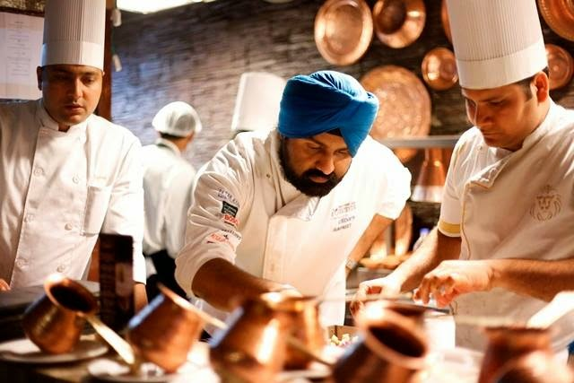
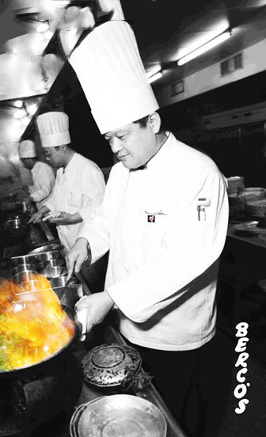
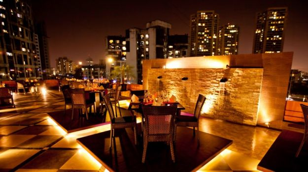

About Us
China Bowl is one of the most distinguished names in the culinary world as far as Chinese & Thai food is concerned. Since its inception in the year 1982 it has become a name to reckon with. CHINA BOWL is known for its delectable Chinese & Thai cuisine and its service par excellence.
"We believe in giving our customers finest quality ingredients cooked under hygienic conditions at a reasonable price. Besides Chinese, we have an exclusive range of Thai dishes with a separate section on our menu.

Our History
'Thai Red Curry' and 'Thai rolls' are specially recommended. All our restaurants are designed by experts keeping in mind the look of a modern Chinese restaurant. All the restaurants have been designed aesthetically with Chinese paintings adorning the walls. Accolades like Viewers Recommended Food Joint by Master Chef Australia, Amongst the 101 Finest Restaurants by Mail Today and Times Service Excellence Award underlines the Customer Satisfaction that we have been enjoying for more than 3 decades. To quote Mr. Kabir Advani, MD – "China Bowl has always believed in providing great quality at a reasonable price. We use better ingredients as compared to other five star restaurants to serve our customers the best Chinese food."

Comfortable Ambience
With the most comforting atmosphere, our restaurant allows its guests to enjoy the peaceful environment along with the bliss of some light music, setting a romantic and a lovely mood for the guests.